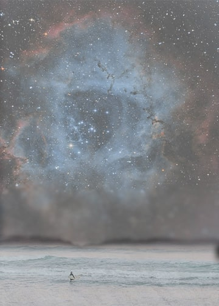

For the first image that I made, I decided to use 3 different layers. I used a beach with a person looking out at the sea, a galaxy, and a paper texture. I made it so that the person wasn't looking out to the sea but rather the galaxy and over this was the paper texture. I wanted this to represent that the world is what you make of it and the texture makes it look more foggy like if it was your imagination.
For the second image, I also used 3 separate layers. I used an image of the sky, a hand holding a bottle, and some flowers. The person is made to look like they are holding a bottle that contains flowers while also looking at the sky. This was supposed to represent that we should take care of nature. For the third image, I added clouds into the sky.